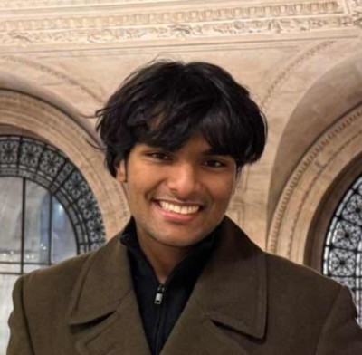

I'm an undergraduate student at Cornell University, broadly interested in computer science, math, and physics, among other fields. Most recently I worked as a member of the hardware subgroup of the Cornell Quantum Computing Association, where we sought to achieve long-lived photonic memory at non-cryogenic temperatures. I like pretty math, and as such the fields I find most fascinating are mathematical physics, the theory of computing, and pure math itself. As of late I've read about a variety of interesting topics beyond these fields, including LLM alignment beyond RLHF, biological world models, and optimization methods.

computer science, physics, and other stuff at Cornell